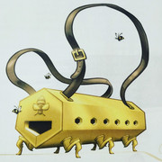
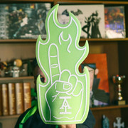

你是否会担心在公司活动的时候，拿出你放在玻璃瓶里的死掉的小妖精的时候，发现公司里的其他三个人也有一样的东西。那就不要再用玩家手册第五章中的饰品表了，使用下面这张表，给你的角色带来一些带有公司风格的饰品。
饰品
D100
1 一块可以打出完美水漂的石头
2 三个被动了手脚的骰子，总是投出低值。
3 一个里面放着吉姆・黑法照片的小盒式吊坠
4 一个迷你铁砧和一把迷你铁锤
5 一个不起作用的不动权杖1
6 一套DIY的针灸工具包
7 一个枭熊的填充玩偶
8 一张新式战争鲁特琴的图纸②
9 一张对一个没人听说过的国家的宣战书
10 一个会冒绿烟的烟斗
11 一只玻璃眼珠
12 一个价值连城的枝形吊灯的灯芯
13 一个带有暗格的细手杖
14 一封罗西・蜂刺写的信
15 一枚落地时总会立着的硬币
16 一张地契。里面是一座废弃的风车和三英亩可耕种的土地，但你永远都找不到在哪儿。
17 一份来自多纳尔大老爹的美味工坊的菜单3
18 一个打开时会大声尖叫的钱包
19 一支用渊鸦的羽毛做的羽毛笔
20 一条总是闻起来一股蜂蜜味的马裤
21 一个只剩一只手臂的瓦尔瑞玩偶（详情见第一章：艾奎兹玄有限责任公司-公司发展史）
22 一个装满来源不明的不同种类的手指骨的皮革袋子
23 你儿时宠物的项圈，宠物名叫肉豆蔻
24 一个贝壳，当你把它放到耳边时，能听到韵动的旋律。
25 一本蘑菇食谱
26 一张过期优惠卷，本可以用来免费兑换一块地基石
27 一个便携式蜂窝④
28 一副看什么都是玫瑰色的护目镜
29 一个惊异魔杖，只能释放修复术5
30 一个槲寄生做的编织手链
31 一个来自未知野兽的利爪，总能吓到小孩子
32 一把能用1分钟折叠起来并放在口袋的长剑
33 一条你认为来源于世界树的还有生机的树根
34 一条带着艾奎兹玄有限责任公司标志的破烂围巾
35 一个装着被撕毁的信的盒子
36 一份标着“无效”的合同
37 一只关在笼子里的小鸽子
38 一个艾奎兹玄有限责任公司的周边⑥
39 一个柏勒罗丰小队的午餐盒
40 一个每个分支都能长出不同水果的盆栽
41 一本给儿童看的冒险书
42 一个欧米的可动玩偶，附带一个可拆卸的武器大锤和圣徽
43 一个刻有桶装机器人图片的玻璃啤酒杯
44 一个巨大的曲棍球用球
45 一个可以发射火炮的加农炮小模型
46 一条华丽的红围巾，和配套的手帕
47 一支被摩根使用过的箭
48 一个紫色蠕虫玩具
49 一个被烧毁的玩偶，她的眼睛会一直盯着你
50 一个有无限墨水的墨水瓶
51 一个刺着“第六人”标志的头带
52 一个粘糊糊的仙人掌
53 一个天鹅绒眼罩
54 一个肮脏的三角龙小雕像，它无法被清洗干净
55 一把刀中贵族的用过的贵族小刀
56 一把被使用过的崇高之刃，来自于崇高之刃组织
57 一个二十面骰子，只能投出4
58 一顶会在黑夜中发光的尖顶帽
59 一个装满水就会哼哼的杯子
60 一个由某人仇敌的头骨制作的马克杯
61 一个装着不朽的萤火虫的小玻璃罐
62 一个用侏儒的胡子做的假胡子
63 一根石化了的巨魔手指
64 一张只剩一半的地图
65 一张剩另一半的地图
66 巨量的口袋里翻出来的棉绒
67 一张当地侏儒小吃摊的宣传海报
68 欧米・德兰的名片
69 变形怪小孩儿的一缕头发
70 一个会往高处滚的弹珠
71 一张记录一件强大魔法武器的指令语的羊皮纸
72 一本叫《巨人有约》的书
73 一份夸立许装置的使用指南⑦
74 一张带签名的著名诗人斯派斯・卡拉韦的大头贴8
75 一个装在水晶盒子里的石化蜥蜴的眼睛
76 一张来自拉尼卡的明信片
77 一本集邮册
78 一小块固态的烟
79 一个有时会投出7的六面骰
80 一只左手铁手套
81 一个播放儿歌的音乐盒
82 一个小盒式吊坠，里面的空间比看起来的要小
83 一株不长叶子，长头发的盆栽
84 一套牙齿收集品
85 一枚硬币，上面的铸造日期总比现实世界晚三年
86 一个角杯，用一头巨大公牛的角制成
87 一本小书，里面有各种制好的植物样本
88 一个奇美拉出生后留下的蛋
89 一个二手的红色强盗面具
90 一个琥珀，里面是蚊蝠
91 一大瓶红松镇的麦芽酒，但无法被打开⑨
92 一根顶上装饰有黄金斗牛犬的手杖
93 一条写在自己手上的笔记，但是忘记什么时候写的了
94 一串从你家族花园里采来的药草
95 一个从德兰与侍从酒店偷来的大啤酒杯⑩
96 一小条保存在酒精里的触手
97 一块画了一张脸的胡桃木
98 一小瓶来自幽暗地域的纱雾之湖的水
99 一小块永远不会融化的冰块
100 一个精心雕刻的剑柄，剑身已经被完好的取下
1：不动权杖
Immovable Rod 权杖，非普通
这根铁制权杖的一端设有一按钮。如果你用一个动作按下按钮，权杖的魔法将把它固定在原地。权杖将保持不动（即使这违反重力）直到你或另一名生物用一个动作再次按下按钮。权杖最多能负载 8,000
磅的重量，超过则权杖的效应自动关闭并掉落。任一生物可以用一个动作进行一次 DC 30
的力量检定，成功则可以将权杖移动至多 10
尺。
②：War
lute，4e的武器https://dungeons.fandom.com/wiki/War_Lute_(4e_Equipment)
3：多纳尔大老爹的美味工坊Big
Daddy Donaar's Yum Yum Hut. 公司员工Donaar
Blit‘zen开的餐馆。
④：
5：惊异魔杖 Wand
of Wonder 魔杖，珍稀（需施法者同调）
这把魔杖有 7
发充能。持握此魔杖时，你可以用一个动作消耗 1
发充能并选择你周围 120
尺内的一名生物、一个物件或空间中的一点为目标。骰 d100
然后参考下表决定效应。
如果魔杖的效应为让你施展一个法术，则该法术豁免
DC为
15。如果该法术的施法范围以尺计算，则其施法范围变为 120
尺。如果魔杖的效应复盖一个范围区域，则你必须以目标为中心并包括它在内。如果魔杖的效应影响多个单位，由 DM
随机决定哪些单位受到影响。
该魔杖每天黎明时恢复 1d6+1
发已消耗的充能。当充能耗尽时，骰一次
d20。如果骰值为
1，魔杖将化为灰烬而毁灭。d
修复术
Mending 变化
戏法
施法时间：1
分钟
施法距离：触及
法术成分：V、S、M（两块天然磁石）
持续时间：立即
该法术修复你所触碰一个物件上的一处破损或裂缝，例如修复一条断裂的链条，或者一把碎成两半的钥匙、一件撕裂的斗篷、
一个漏了的酒袋等。只要破损或断裂处在任意方向上都不超过 1
尺，你就可以不留痕迹地修复它。该法术可以从物理上修复一件魔法物品或一个构装体，但不会恢复这类物件上的魔法。
⑥：
一个绿色的泡沫手指。和吉姆・黑法有关，具体的就不了解了。
⑦：夸立许装置apparatus
of Kwalish: 详情见DMG第七章
8：Spice
Caraway 直译是辣味藏茴香，并不着名，跑团视频里的梗
⑨：红松镇Red
Larch，详情见模组《毁灭亲王》第二章
⑩：德兰与侍从Dran
＆
Courtier，这是德兰在红松镇开的一家酒店，同时也是”C“
team的总部